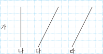

4. 사각형
수직을 알아볼까요
수학
82~85
쪽
수학 익힘
60
쪽
다음 물음에 답하고
안에 알맞은 말을 써넣으세요.

두 직선이 만나서 이루는 각이 직각인 곳을 모두 찾아 로 표시해 보세요.
직선 가와 직선 나는 서로
입니다.
직선 나는 직선 가에 대한
입니다.
직선 나에 대한 수선을 써 보세요.
직선 가와 직선 나는 서로
수직
입니다.
두 직선이 서로 수직으로 만나면 한 직선은 다른 직선에 대한 수선이므로 직선 나는 직선 가에 대한
수선
입니다.
직선 나에 대한 수선은 직선 가입니다.